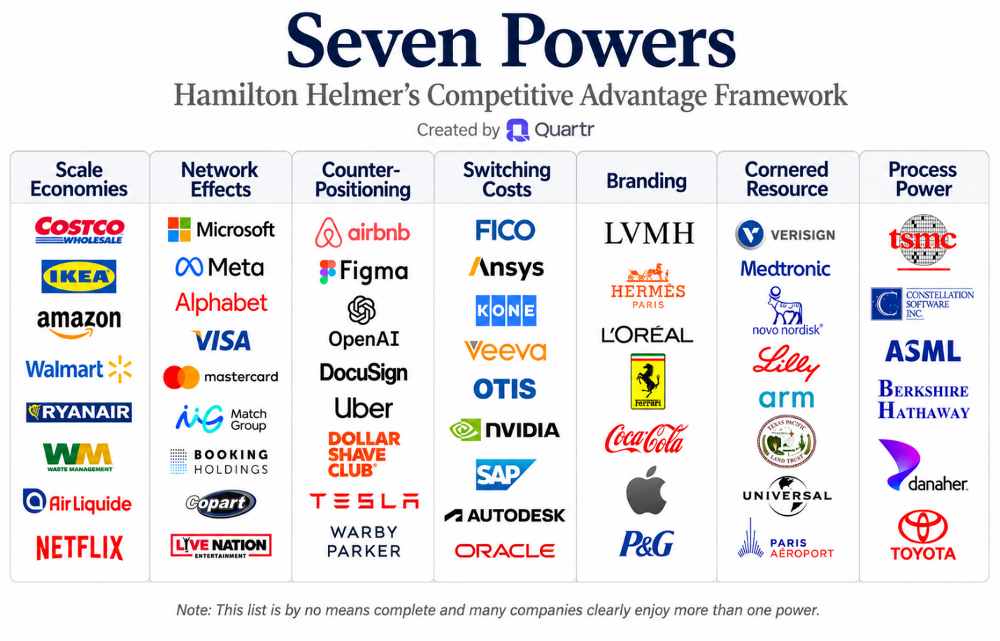
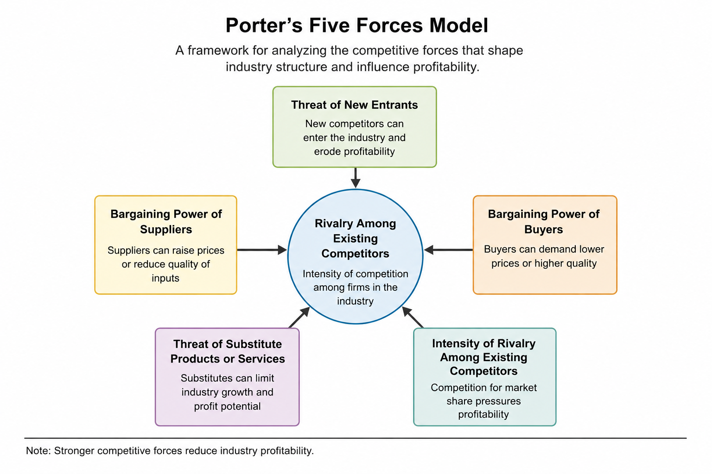

2.1 How Technology Shapes Competition
Technology and the Competitive Arena
The High-Stakes Collision of Steel and Silicon
For nearly two centuries, heavy agricultural manufacturing was evaluated on the uncompromising parameters of industrial engineering: structural steel durability, diesel horsepower, and raw mechanical torque. However, the competitive landscape of the agricultural sector has undergone a fundamental transformation. A modern farm tractor or sprayer passing through cropland does not merely distribute seeds or chemicals; it operates as a sophisticated mobile edge-computing center.1
Traveling at twelve miles per hour, these machines utilize carbon-fiber booms fitted with thirty-six high-resolution cameras and onboard graphic processing units (GPUs) to scan over two thousand square feet of vegetation every second.2 Operating with advanced computer-vision algorithms, the system distinguishes cash crops from weeds in milliseconds, triggering individual spray nozzles to apply herbicide only to target weeds.1
This technology, developed by John Deere under the commercial name See & Spray, achieved an average 59 percent reduction in herbicide consumption across treated acreage, saving operators millions of dollars in input costs while minimizing environmental runoff.1 Yet, the true strategic breakthrough is not found in the physical cameras or the nozzles. It lies in how the technology transforms the business model.1
Instead of relying solely on transactional, one-time sales of heavy machinery, the manufacturer now employs a subscription-based, usage-based pricing model where customers pay per acre sprayed.1 The hardware has effectively become a delivery platform for recurring, high-margin software-as-a-service (SaaS) revenue.1
When an industrial pioneer of the Old Economy transitions into a software and data empire, it demonstrates that technology has evolved far beyond its historical role as an administrative support function.1 In the modern business landscape, technology is not just an expense to be minimized; it is the primary engine for creating, delivering, and capturing market value.
To build enterprises that endure, managers must understand the strategic frameworks that separate short-term technological fads from sustainable competitive advantages.
Demystifying Strategy: General Strategy versus Information Technology Strategy
To understand how technology shapes modern competition, one must first draw a clear distinction between general business strategy and information technology (IT) strategy.
Historically, these two disciplines operated in separate corporate silos.5 General business strategy was formulated by executive leadership to determine where to compete and how to win. It answered fundamental questions regarding which geographic markets to enter, which customer demographics to target, and how to position the firm against established rivals.
Under this traditional framework, IT strategy was treated as a subordinate, functional strategy.5 IT was tasked with determining how to enable the executive vision by building databases, maintaining enterprise resource planning systems, and ensuring network security. The relationship was linear and top-down: business strategy directed IT strategy, and the chief information officer (CIO) was viewed primarily as an operational infrastructure architect rather than a strategic leader.5
| Strategic Parameter | General Business Strategy | Information Technology (IT) Strategy |
|---|---|---|
| Core Question | Where should the firm compete, and what is the overarching business model? | Which systems, data architectures, and networks are required to execute operations? |
| Primary Domain | Market positioning, target customer selection, and competitive differentiation. | System deployment, workflow automation, and data storage capabilities. |
| Traditional Role | Formulates the long-term corporate vision and allocates capital resources.6 | Acts as a functional support department focused on minimizing operational costs.5 |
| Modern Execution | Intersects continuously with technical capabilities to identify new revenue streams. | Fuses with business units to create real-time, adaptive feedback systems. |
In the digital era, this conceptual boundary has collapsed. Because business infrastructure is thoroughly digitized, technology is no longer merely a tool to automate manual tasks; it is the fabric of the product or service itself.5
Rather than chasing functional "alignment," winning organizations achieve a complete digital business strategy.5 This is a strategic fusion where technology is embedded directly into corporate strategy, allowing firms to leverage digital resources to remove historical operational constraints, formulate entirely new value propositions, and shape industry structure.
Operational Effectiveness versus Strategic Positioning: The Fast Follower Trap
A critical error made by modern managers is equating technological acquisition with strategic superiority.4 To avoid this pitfall, managers must utilize the frameworks of strategic thinker Michael Porter, who separated operational effectiveness from strategic positioning.4
Operational effectiveness refers to performing the same operational activities better than rivals. This includes tactics to improve product quality, lower manufacturing costs, or accelerate delivery speeds.4
While operational excellence is vital to remain competitive, it is rarely a source of sustainable dominance. The risk lies in "sameness": because technology is highly modular and widely distributable, rivals can easily purchase the same software, hire the same consultants, and copy the same user interfaces.4
This ease of replication fuels the fast follower problem.4 This competitive dynamic occurs when savvy competitors watch a pioneering firm's initial technological efforts, identify its market and technical missteps, and then enter the market quickly with a comparable or superior product at a fraction of the research and development cost.4
For example, early web portals routinely saw their innovative consumer features matched by competitors in less than two months on average, undercutting any first-mover advantage.7 Similarly, high-end storage pioneer EMC saw its margins collapse when fast-following rivals introduced comparable hardware platforms, driving market prices down by 60 percent in a single year.7
Conversely, strategic positioning involves performing different activities from rivals, or performing similar activities in a fundamentally different way.4 Strategic positioning uses technology to design an imitation-resistant value chain—an organizational structure and set of internal workflows that competitors cannot easily copy without destroying their own business model.7
Tactical vs. Strategic Information Systems
To evaluate the strategic value of technology, managers must distinguish between systems designed for operational survival (operational effectiveness) and those designed for market dominance (strategic positioning).
Many information systems are deployed strictly to achieve operational effectiveness. These are Tactical Information Systems. Examples include standard payroll systems, general ledger accounting software, and off-the-shelf inventory management tools.
While tactical systems are absolutely necessary to remain competitive, they rarely provide a long-term advantage. Because these systems are readily available as commercial off-the-shelf software or Software-as-a-Service (SaaS) subscriptions, any competitor can buy the same capabilities. Relying solely on tactical IT investments leads to intense, margin-eroding competition26.
By contrast, Strategic Information Systems (SIS) are IS designed to restructure a firm's value chain, lock in customers, raise barriers to entry for potential competitors, and create entirely new business models25.
Domino’s did not buy a generic, off-the-shelf delivery program; it custom-built the Anyware ecosystem, integrating its digital interface directly with its proprietary logistics networks and store-level workflows24.
The Resource-Based View: Building the Tech Moat
To evaluate whether an organization's technology-driven assets can resist competitor erosion, managers rely on the resource-based view of competitive advantage.4 This strategic framework posits that for a firm to maintain a sustainable competitive advantage—financial performance that consistently outperforms industry peers—it must control a set of exploitable resources that satisfy all four criteria of the modern VRIO framework:
- Valuable: Does the resource or capability enable the firm to exploit opportunities or neutralize threats?
- Rare: Is it controlled by relatively few competing firms?
- Imperfectly Imitable: Is it costly or difficult for competitors to acquire, develop, or replicate?
- Organized to Capture Value: Is the firm organized—through its structures, processes, systems, policies, and complementary resources—to fully exploit it?
The Digital Flywheel: Algorithms, Scale, and Reinforcing Loops
Data as a strategic asset. Among the seven components of an Information System, data increasingly functions as a core source of advantage in its own right. Proprietary, high-quality data that improve with use can create data network effects: the more the system is used, the better its predictions and recommendations become, which attracts more users and generates still more data. Firms that treat data merely as fuel for applications miss this dynamic. Those that deliberately invest in data quality, unique data collection, and the organizational ability to act on insights turn data into a VRIO resource. Domino’s direct ownership of customer ordering data (rather than relying on third-party aggregators) and John Deere’s continuous stream of field-level sensor data both illustrate the point.
In the era of artificial intelligence and machine learning, sustainable competitive advantage is increasingly achieved by building a digital flywheel. This strategic mechanism operates as a reinforcing feedback loop where data and algorithms create a self-strengthening market position.
The mechanism functions through a logical progression: the collection of high-quality, proprietary operational and customer data is used to train and refine machine learning models. These superior models automate decisions and predict trends with higher precision, allowing the firm to deliver better customer outcomes.
This superior value proposition drives customer loyalty and increases repeat engagement, which in turn generates even larger volumes of proprietary data, perpetuating the cycle.
From Value Creation to Value Capture
The first part of this section shows that technology is no longer just a support function. It can reshape the product itself, the customer experience, the operating model, and even the way a firm makes money. But recognizing that digital tools can create value is only the beginning. Managers also need to ask a harder question: how much of that value will the firm actually keep?
Hamilton Helmer's 7 Powers pushes that question inside the firm. Even if a company creates an attractive digital offering, it still needs a durable reason why rivals cannot quickly copy its success. Scale, network effects, switching costs, process power, counter-positioning, branding, and cornered resources help explain why some firms can protect profits after the market recognizes an opportunity.
Porter's Five Forces then widens the lens from the firm to the industry. A digital innovation may make buying easier, production faster, or service more convenient, yet it can also lower barriers to entry, increase buyer power, intensify rivalry, or invite substitutes.
Together, these frameworks complete the strategic picture: digital technology creates value, industry structure shapes value capture, and durable power determines whether profits can be protected over time.
Building Durability in the Digital Age: Helmer’s 7 Powers
In the mid-2000s, executives at Blockbuster viewed Netflix as a minor nuisance—a niche startup mailing DVDs in red envelopes. Blockbuster possessed over 9,000 retail stores, a globally recognized brand, and billions of dollars in revenue. Yet within a single decade, Blockbuster filed for bankruptcy, while Netflix grew into a global media platform worth hundreds of billions of dollars13.
Around that same time, semiconductor designer Nvidia made a quiet, persistent investment of roughly $500 million per year into a software platform called CUDA15. CUDA enabled standard graphics processing units (GPUs) to handle complex, general-purpose mathematical computations15. Wall Street analysts initially criticized the massive expenditure as an unnecessary drag on quarterly profits15. Fast-forward to the rise of modern generative artificial intelligence, and that long-standing software investment created a competitive moat so formidable that Nvidia’s market capitalization surged past $3 trillion, leaving well-funded technology rivals scrambling to catch up15.
Why do some innovative firms build lasting commercial empires while others see early successes eroded by swift imitators? In technology and digital business, brilliant product designs and superior execution are rarely enough to survive in the long run13. When a firm demonstrates a lucrative new market opportunity, competitors inevitably deploy capital, hire talent, and copy software architectures to arbitrage away those profits16. To achieve persistent, superior cash flows, an enterprise must establish structural barriers that shield its business model from competitive erosion16. Strategy scholar and Silicon Valley investor Hamilton Helmer formalized this reality into a strategic framework known as the 7 Powers19.
Decoding Power: Beyond Operational Effectiveness
Many business executives confuse operational effectiveness with strategy. Adopting modern cloud platforms, deploying advanced machine learning pipelines, or streamlining supply chain management can increase operational efficiency13. However, because those operational improvements can be purchased or copied by rivals, they rarely yield a lasting competitive edge13. Strategy, by contrast, focuses on establishing conditions that prevent competitors from bidding down profit margins16.
Helmer defines Power as the set of business conditions that creates the potential for persistent differential returns. In strategic finance, differential returns refer to a firm’s ability to generate returns on capital significantly higher than its cost of capital, outperforming industry peers over extended periods16.
Under the 7 Powers framework, true business Power requires two mandatory attributes operating in tandem16:
- Benefit: The magnitude component of Power. This is the specific mechanism that materially augments free cash flow, enabling a firm to charge higher prices, lower its operating costs, or reduce its capital intensity relative to rivals16.
- Barrier: The duration component of Power. This is the structural obstacle that prevents existing competitors and new entrants from copying or arbitraging the Benefit16.
A firm with a Benefit but no Barrier will experience only temporary high profits before competitors enter and drive down prices16. Conversely, a firm attempting to erect a Barrier without a tangible Benefit offers no superior value to customers or investors18. To deliver true value, a business model must yield cash flows that are superior (outperforming competitors), significant (materially impacting the firm's bottom line), and sustainable (defensible over time)16.
Key Takeaways
Value Creation vs. Value Capture
Finding product-market fit creates value for customers, but acquiring Power allows a company to capture that value for shareholders20. Without a defensible Barrier, a firm merely acts as an unpaid educator for the market, leaving the ultimate financial profits to faster, better-capitalized followers16.
The Seven Sources of Persistent Advantage
Helmer identifies seven distinct structural configurations that satisfy the criteria of both a Benefit and a Barrier16. Each Power possesses a unique economic mechanism and defensible barrier.
1. Scale Economies
Scale Economies occur when per-unit costs decrease as production or operational volume increases16. The Benefit is a lower operating cost structure, while the Barrier is the prohibitive cost a challenger must pay to gain equivalent market share16. Fixed costs are spread across a massive customer base, rendering smaller rivals economically unviable if they attempt to match prices18.
When Netflix shifted to digital streaming, it licensed original content like House of Cards for an estimated $100 million13. With 30 million subscribers at the time, Netflix paid roughly $3.33 per subscriber for the content18. A smaller streaming competitor with only 1 million subscribers would have needed to spend $100 per subscriber to acquire the identical show, creating a massive cost disadvantage for smaller platforms18.
2. Network Economies
Network Economies (frequently called network effects) occur when the value of a product or service for an individual user increases as the total number of active users grows16. The Benefit allows the network owner to charge higher prices or achieve higher monetization per user due to superior platform utility16. The Barrier is the value gap: prospective switchers face a severe loss of value if they move to a smaller network with fewer participants16.
Professional platform LinkedIn demonstrates strong network economies18. Job seekers go to LinkedIn because corporate recruiters are active there, and recruiters pay premium access fees because the vast majority of professionals maintain profiles on the platform18. Alternative platforms struggle to lure users away because a professional network without active recruiters offers minimal utility18.
3. Counter-Positioning
Counter-Positioning occurs when a newcomer adopts a new, superior business model that an incumbent firm cannot mimic because doing so would inflict severe self-inflicted damage on its existing, highly profitable core business16. The Benefit is a lower cost structure or superior customer value proposition for the challenger16. The Barrier is collateral damage—the cannibalization of existing revenue streams or the disruption of vital distributor relationships16.
When Vanguard introduced low-cost, passive index funds in 1975, incumbent investment firms like Fidelity actively criticized the strategy18. Fidelity made substantial profits charging high management fees for actively managed funds18. Matching Vanguard’s low-cost model would have required Fidelity to destroy its lucrative fee structure and anger its broker network—a response that was rationally unattractive to incumbent leadership18. By the time legacy firms responded decades later, Vanguard had accumulated trillions of dollars in assets18.
A very old but still useful example is Netflix versus Blockbuster. Netflix's disruption of the traditional video rental market, dominated by Blockbuster, is a classic example of counter positioning. Netflix's subscription-based, on-demand model was something Blockbuster couldn't easily replicate without harming its retail business, which relied heavily on late fees and in-store rentals. This counter positioning strategy, combined with its early adoption of streaming technology, paved the way for Netflix's digital dominance. Netflix further capitalized on its counter positioning by investing heavily in original content, creating a vast library of exclusive shows and movies that differentiated it from competitors and fueled subscriber growth.
4. Switching Costs
Switching Costs arise when a customer incurs significant financial, procedural, or relational losses when transitioning from one vendor’s product to a competing alternative17. The Benefit allows the incumbent to charge higher prices or maintain high retention rates for recurring revenue16. The Barrier requires rivals to offer massive financial concessions or performance improvements to compensate customers for the disruption of switching17.
Enterprise resource planning (ERP) providers like SAP illustrate this dynamic18. Once an organization integrates SAP across its global operations, financial systems, supply chains, and employee workflows are tightly bound to the software18. Replacing the system costs millions of dollars, risks business disruption, and requires extensive retraining18. Consequently, SAP maintains extremely high customer retention and steady maintenance fee revenue despite varying customer satisfaction scores18.
Salesforce, a leading customer relationship management (CRM) platform, benefits from high switching costs. Once a business implements Salesforce, it becomes deeply integrated into its operations. Switching to a different CRM system would involve significant data migration, employee retraining, and potential disruption to workflows3. This has been a key factor in Salesforce's digital success, enabling it to retain customers and build a loyal user base. Salesforce's extensive ecosystem of apps and integrations further increases switching costs, as businesses become reliant on these add-ons to support their specific needs.
5. Branding
Branding is the durable attribution of higher perceived value or lower uncertainty to an objectively identical offering based on historical information about the seller16. The Benefit is premium pricing leverage driven by positive emotional associations (affective valence) or reduced consumer fear (uncertainty reduction)13.
Tiffany & Co. sells diamond rings at prices significantly higher than unbranded rings with identical gemological cut, color, and clarity metrics18. Consumers willingly pay the premium because the brand reduces purchase anxiety for high-stakes emotional purchases, an asset built over nearly two centuries of retail consistency18.
6. Cornered Resource
A Cornered Resource is preferential access to a coveted, highly valuable asset on attractive economic terms17. The Benefit is unique product performance, lower production costs, or elevated pricing power20. The Barrier is legal protection or decree (such as patents, exclusive property rights, or deep personal talent loyalty) that prevents rivals from procuring the resource17.
Pixar’s original creative leadership team—the "Brain Trust" comprising John Lasseter, Ed Catmull, and Steve Jobs—achieved an unprecedented streak of critically acclaimed, high-grossing animated films18. The team's creative synergy could not be bought or assembled on the open market, eventually prompting Disney to acquire Pixar for $7.4 billion to secure the human capital required to revitalize Disney’s internal animation studios18.
7. Process Power
Process Power consists of deeply embedded, highly complex organizational routines, operational activity maps, and employee habits that deliver superior product quality or lower production costs16. The Benefit is operational supremacy in cost or quality13. The Barrier, like branding, is hysteresis combined with organizational opacity16. The process is so intricate that even if competitors observe the external procedures, they cannot easily replicate the underlying implicit coordination13.
The Toyota Production System (TPS) introduced revolutionary lean manufacturing concepts like kanban (inventory management), kaizen (continuous improvement), and andon cords (allowing any line worker to pause assembly to address quality issues)13. Although competing automakers regularly toured Toyota facilities and read books detailing TPS, replicating the organizational trust, tacit knowledge, and systemic behavior took rivals decades to imitate13.
| Power | Primary Benefit | Primary Barrier | Classic Business Example |
|---|---|---|---|
| Scale Economies | Reduced cost per unit16 | Prohibitive capital cost of acquiring share16 | Netflix (Content amortization across subscriber base)13 |
| Network Economies | Higher price/monetization per user16 | Value gap for switchers to smaller networks16 | LinkedIn (B2B professional graph density)18 |
| Counter-Positioning | Lower costs or superior user model16 | Collateral damage / Cannibalization of incumbent core16 | Vanguard (Passive index funds vs. Active fee model)18 |
| Switching Costs | Pricing power / High customer retention16 | High transition financial/procedural costs17 | SAP / Salesforce (Deep operational workflow lock-in)18 |
| Branding | Premium price leverage13 | Hysteresis (Time and historical proof required)16 | Tiffany & Co. (Uncertainty reduction / Affective valence)17 |
| Cornered Resource | Unique product quality / Reduced input cost20 | Legal decree, patents, or exclusive talent loyalty17 | Pixar (Creative Brain Trust)18 |
| Process Power | Superior operational efficiency / Product quality16 | Hysteresis and tacit organizational complexity16 | Toyota (Toyota Production System / Lean management)13 |
Source: https://quartr.com/insights/edge/diving-deep-into-helmers-7-powers-using-company-examples
Figure 2.1b Powers of Successful Companies

Source: https://quartr.com/insights/edge/diving-deep-into-helmers-7-powers-using-company-examples
Show long description
The figure is titled “Seven Powers: Hamilton Helmer’s Competitive Advantage Framework,” created by Quartr.
It presents a horizontal table with seven columns, each representing one of Helmer’s seven sources of durable competitive advantage:
- Scale Economies
- Network Effects
- Counter-Positioning
- Switching Costs
- Branding
- Cornered Resource
- Process Power
Under each column header appear company logos that illustrate the power. Only two representative examples are noted here for each category:
- Scale Economies: Costco, Amazon
- Network Effects: Microsoft, Meta
- Counter-Positioning: Airbnb, Figma
- Switching Costs: FICO, Ansys
- Branding: LVMH, Hermès
- Cornered Resource: Verisign, Medtronic
- Process Power: TSMC, ASML
A note at the bottom of the figure states that the list is by no means complete and that many companies clearly enjoy more than one power.
The overall purpose of the diagram is to provide a clear visual taxonomy of the seven distinct mechanisms through which firms can sustain competitive advantage over time.
Power Dynamics in the Age of Artificial Intelligence
The rapid acceleration of generative artificial intelligence is shifting how managers must analyze and build strategic Power21. AI capabilities act as a catalyst that compresses software development cycles, weakens shallow competitive moats, and redefines capital requirements21.
In traditional software-as-a-service (SaaS) businesses, scale economies were historically built by spreading fixed engineering software development costs over many corporate clients22. AI coding assistants allow small software teams to design, test, and ship complex applications rapidly22. When a small startup can engineer functional software parity in months, raw software code ceases to function as a durable barrier21. Furthermore, autonomous agent protocols enable AI agents to execute tasks directly across disparate back-end databases, bypassing human graphical interfaces and threatening traditional SaaS user-interface switching costs22.
Conversely, AI dramatically reinforces platform switching costs and data-driven network economies21. Consider Nvidia’s strategy15. Its deepest moat is not merely GPU silicon performance, but the CUDA software ecosystem15. Millions of AI developers, computer science programs, open-source libraries, and enterprise frameworks are optimized specifically for CUDA15. Transitioning an AI enterprise from Nvidia to alternative hardware requires rewriting foundational code, retraining technical teams, and accepting operational uncertainty—a massive switching cost that allows Nvidia to capture gross margins exceeding 70%15.
AI also supercharges network economies within transactional marketplace models22. Intelligent automated matching algorithms, dynamic pricing engines, and automated fraud detection systems improve as transaction volume scales22. For example, AI-first talent marketplaces like Mercor utilize AI-driven video interviews to evaluate job candidates at scale22. Every candidate evaluated and successfully placed feeds data back into the system, refining matching accuracy22. This data flywheel makes the marketplace stickier for employers and job seekers alike, deepening the platform's network economy22.
In the AI era, cornered resources are shifting away from general algorithms toward proprietary, clean, domain-specific training data, custom silicon capacity, and specialized AI systems engineering talent20.
The Power Progression: Strategy Across the Firm’s Lifecycle
Establishing Power is not a static planning event; it is a dynamic process tied directly to the growth lifecycle of a business13. Strategy scholar Hamilton Helmer maps this evolution through the Power Progression, demonstrating when specific powers can be successfully captured during a company's growth13.
During the Origination Stage, when a company invents a new business model or product, market scale does not yet exist13. At this point, the primary routes to Power are Counter-Positioning (adopting a business model incumbents cannot copy without damaging their core) or securing a Cornered Resource (such as key patents or foundational talent)13.
As the market enters the high-growth Takeoff Stage, customer acquisition accelerates rapidly13. Managers must aggressively capture market share to lock in Scale Economies, establish Network Economies, or deeply integrate software into customer operational workflows to build Switching Costs13.
Finally, during the Stability Stage, as industry growth flattens, long-term durability matures through Branding and Process Power13. These two powers cannot be rushed; they require years of consistent organizational execution, brand building, and implicit workflow refinements13.
Managers navigating technology markets must evaluate strategic initiatives against these principles14. Operational enhancements improve short-term execution, but building true business value requires establishing at least one of the 7 Powers to protect future earnings from competitive copycats16.
Porter’s Five Forces in the Digital Age
Porter’s Five Forces is one of the simplest and most useful tools for thinking about why some industries are profitable while others are not. It helps managers step back from the excitement around new technologies and ask a basic but powerful business question: who actually captures the value?
Originally developed by Michael Porter in 1979, the framework looks at five sources of pressure on profitability: rivalry among existing competitors, the threat of new entrants, the bargaining power of buyers, the bargaining power of suppliers, and the threat of substitutes. Together, these forces reveal how difficult it is for a firm to earn and sustain profits in a particular industry.23
Figure 2.1c Porter’s Five Forces Model

Source: Author-created.
Show long description
The figure is titled “Porter’s Five Forces Model” with the subtitle “A framework for analyzing the competitive forces that shape industry structure and influence profitability.”
At the center is a blue circle labeled Rivalry Among Existing Competitors, described as the intensity of competition among firms in the industry.
Four surrounding boxes connect to the center with arrows:
- Top (green): Threat of New Entrants – New competitors can enter the industry and erode profitability.
- Left (yellow): Bargaining Power of Suppliers – Suppliers can raise prices or reduce quality of inputs.
- Right (orange): Bargaining Power of Buyers – Buyers can demand lower prices or higher quality.
- Bottom-left (purple): Threat of Substitute Products or Services – Substitutes can limit industry growth and profit potential.
- Bottom-right (teal): Intensity of Rivalry Among Existing Competitors – Competition for market share pressures profitability.
A note at the bottom states: “Stronger competitive forces reduce industry profitability.”
The diagram shows how these five forces collectively determine the attractiveness and profit potential of an industry.
That makes the model especially valuable in digital business. Digital technologies can create enormous value for customers, but value creation is not the same as value capture. A digital product may make an industry faster, cheaper, and more convenient, yet the financial gains may flow mostly to customers, platform owners, or other firms in the ecosystem rather than to the company that built the technology.
In other words, Porter’s Five Forces helps managers answer three practical questions: Where does the money go? Who holds the power? And is any advantage durable, or will competitors quickly erase it? That is why the framework is less about strategy jargon and more about survival. It helps firms avoid building something that creates value everywhere except in their own profit statement.
1. Threat of New Entrants
In traditional industries, entering a market often required large capital investments, physical distribution networks, and years of brand building. Digitalization has lowered many of those barriers. Cloud computing, software-as-a-service platforms, and digital marketplaces allow startups to launch quickly and scale with far less fixed investment than before.
For example, direct-to-consumer brands in fashion and cosmetics can bypass traditional retail channels, market directly through social media, and rely on third-party logistics firms to handle fulfillment. In financial services, fintech firms such as Robinhood entered retail brokerage by offering low-cost, app-based trading without the branch network that legacy firms once considered essential.
The result is that digital industries often feel open at first, but that openness can make them more crowded, more competitive, and less profitable.
2. Bargaining Power of Buyers
The internet has given buyers far more information than they once had. Customers can compare prices instantly, read reviews, switch providers quickly, and discover alternatives with very little effort. That reduces information asymmetry and weakens the seller’s ability to charge a premium based only on ignorance or convenience.
In many digital markets, switching costs are low as well. If an app, platform, or online service disappoints users, they can often move to another option with a single click or tap. That puts intense downward pressure on margins and forces firms to compete on experience, convenience, trust, and personalization rather than on availability alone.
In digital business, the buyer often has far more power than in the past.
3. Bargaining Power of Suppliers
Digital platforms can either reduce or increase supplier power. On one hand, e-commerce and global sourcing tools make it easier for firms to compare suppliers and find alternatives, which can weaken the leverage of any single provider.
On the other hand, some suppliers control essential digital infrastructure, proprietary data, critical software interfaces, or platform access. Those suppliers can command significant power. A good example is the dependence of app developers on the rules, fees, and approval processes of dominant platform owners such as Apple and Google.
So while digital tools may expand sourcing options in some cases, they can also create new forms of dependence in others.
4. Threat of Substitute Products or Services
Digital technology has replaced or reduced demand for many physical products and services. Streaming services substituted for CDs and downloaded music. Online news and social media reduced the role of print media. Internet-based communication tools replaced many traditional telecommunication services.
The substitute does not always look exactly like the original product. Often it solves the same underlying customer need in a cheaper, faster, or more convenient way. That is what makes substitutes so dangerous: they can make an established business model feel outdated almost overnight.
More recently, conversational AI tools have begun to act as substitutes for traditional search behavior in some situations, changing how people discover information, compare options, and interact with brands.
5. Rivalry Among Existing Competitors
Digital markets often intensify rivalry because competitors can see one another’s moves quickly and copy features rapidly. When products are easy to compare and switching is easy, firms may find themselves competing on price, speed, or user experience with little room to protect margins.
If a company’s advantage rests mainly on a software feature that can be reverse-engineered or duplicated, rivals may match it quickly. In that environment, features spread fast, differentiation fades, and profitability can decline across the industry.
This is why digital strategy cannot focus only on operational efficiency. A technology may improve the firm’s internal performance while still making the broader market more competitive and less profitable.
Why the Framework Still Matters
Porter’s Five Forces remains useful because it forces managers to think like business strategists rather than technology enthusiasts. A digital innovation may be impressive, but the deeper question is whether it changes the structure of competition in a way that helps the firm capture value.
Used well, the framework helps managers think clearly about profit, power, and durability. It reminds us that in digital business, creating value is only half the challenge. The other half is capturing enough of that value to make the business viable.
Key Terms and Definitions
- Sustainable competitive advantage
- Financial performance that consistently outperforms industry averages over the long term.4
- Information technology (IT) strategy
- A functional-level strategy focused on the deployment, management, and optimization of an organization's technical systems, data architectures, and networks.5
- Digital business strategy
- An integrated corporate strategy formulated and executed by leveraging digital resources to create trans-functional value across operations, marketing, and customer ecosystems.5
- Operational effectiveness
- Performing the same operational tasks better than rivals, which is critical for survival but highly vulnerable to fast-follower copying.4
- Strategic positioning
- Performing different business activities from rivals, or performing similar activities in a fundamentally different way to build a unique, imitation-resistant value chain.4
- Data Lake
- A data lake is a centralized repository that stores large amounts of raw data in its original form, including structured, semi-structured, and unstructured data, for later analysis or processing.
- Data as a Strategic Asset
- Proprietary, high-quality data that improve with use and can generate data network effects, becoming a source of VRIO advantage when combined with the ability to act on insights.
- Fast follower problem
- The strategic risk where competitors observe a pioneer's market entry, learn from its operational and technological missteps, and rapidly enter the market with a comparable or superior product at a lower cost.4
- Imitation-resistant value chain
- An organizational structure and set of internal workflows that are highly resistant to competitor replication because copying them would disrupt the competitor's existing business model.7
- Resource-based view of competitive advantage
- A strategic framework asserting that to maintain a sustainable competitive advantage, an organization must control resources that are valuable, rare, imperfectly imitable, and nonsubstitutable.4
- Digital flywheel
- A self-reinforcing feedback loop where proprietary data collection improves machine learning models, leading to superior customer experiences and operational outcomes, which in turn captures even larger volumes of data.
- Active learning
- An iterative machine learning process where a model's performance on live operational data guides the prioritizing and labeling of the most uncertain or challenging data points, maximizing model accuracy over time.12
- Power
- The set of business conditions creating the potential for persistent differential returns on capital16. Managerial significance: The baseline requirement for long-term shareholder value creation; distinguishes strategy from operational effectiveness14.
- Benefit
- The magnitude attribute of Power that materially augments free cash flow through higher prices, lower costs, or reduced capital needs16. Managerial significance: Explains how a business model increases profit margins relative to competitors16.
- Barrier
- The duration attribute of Power that prevents competitors from engaging in value-destroying arbitrage16. Managerial significance: Explains why profitability persists over time despite rival competition17.
- Competitive Arbitrage
- The economic process by which market rivals copy profitable innovations until industry profit margins drop to baseline levels16. Managerial significance: The primary competitive threat that Power is designed to neutralize16.
- Counter-Positioning
- A power where an entrant adopts a superior business model that incumbents refuse to copy due to anticipated damage to their existing core revenue16. Managerial significance: Allows nimble startups to disrupt industry titans without triggering an immediate competitive response14.
- Power Progression
- The sequential framework mapping which strategic powers can be developed during specific growth lifecycle stages (Origination, Takeoff, Stability)13. Managerial significance: Guides executives on which competitive moats to prioritize at different stages of corporate maturity13.
Footnotes
- How is John Deere transforming farming with AI technology? | AIM Media House, accessed July 26, 2026, https://aimmediahouse.com/market-industry/john-deere-autonomous-ai-2025-initiatives Back to text
- 2024 BUSINESS IMPACT REPORT - John Deere, accessed July 26, 2026, https://www.deere.com/assets/pdfs/common/our-company/sustainability/business-impact-report-2024.pdf Back to text
- John Deere Operations Center, AutoTrac and StarFire GPS - A-bots, accessed July 26, 2026, https://a-bots.com/blog/john-deere-operations-center Back to text
- Introduction - 2012 Book Archive, accessed July 26, 2026, https://2012books.lardbucket.org/books/getting-the-most-out-of-information-systems-a-managers-guide-v1.0/s06-01-introduction.html Back to text
- Digital Business Strategy: Toward a Next Generation of Insights - MIS Quarterly, accessed July 26, 2026, https://misq.umn.edu/misq/article/37/2/471/104/Digital-Business-Strategy-Toward-a-Next-Generation Back to text
- DIGITAL BUSINESS STRATEGY: TOWARD A NEXT GENERATION OF INSIGHTS - MIS Quarterly, accessed July 26, 2026, https://misq.umn.edu/misq/article-pdf/37/2/471/2328/8_si_dbs_introduction.pdf Back to text
- Tech and Strategy - Gallaugher.com, accessed July 26, 2026, https://gallaugher.com/StratAndTechSpring08.html Back to text
- Information Systems: A Manager's Guide to Harnessing Technology [9.1 ed.] 9781453341698 - DOKUMEN.PUB, accessed July 26, 2026, https://dokumen.pub/information-systems-a-managers-guide-to-harnessing-technology-91nbsped-9781453341698.html Back to text
- Strategy & Technology - Gallaugher.com, accessed July 26, 2026, https://gallaugher.com/Strategy%20&%20Technology.pdf Back to text
- Starbucks Deep Brew AI Official Technical Architecture Framework ..., accessed July 26, 2026, https://kernelgrowth.io/starbucks-ai-framework/ Back to text
- JC EMBA Case Discussion: Starbucks Deep Brew – AI‑Powered Customer Experience, accessed July 26, 2026, https://johnclements.com/the-looking-glass/artificial-intelligence/ai-powered-customer-experience-starbucks-deep-brew/ Back to text
- How Data Annotation is Powering the Next Wave of Agriculture | CVAT Blog, accessed July 26, 2026, https://www.cvat.ai/resources/blog/agriculture-data-annotation Back to text
- The 7 Powers Of Sustainable Value Capture Known To Nvidia, Netflix And Pixar (Part II) - Fit To Lead - Mark Farrer-Brown, https://www.fittolead.net/7-powers-of-sustainable-value-capture-known-to-nvidia-netflix-and-pixar-part-i-i/ Back to text
- Foreword by Reed Hastings CEO and Co-Founder of Netflix - 7 Powers, https://7powers.com/foreword/ Back to text
- NVIDIA's CUDA Moat: How Developer Lock-In Built a Trillion-Dollar AI Empire - Medium, https://medium.com/@productbrief/nvidias-cuda-moat-how-developer-lock-in-built-a-trillion-dollar-ai-empire-40d2f7f7dca2 Back to text
- 7 Powers: The Foundations of Business Strategy by Hamilton Helmer - Abi Tyas Tunggal, https://tyastunggal.com/p/7-powers-the-foundations-of-business Back to text
- 7 Powers: The Foundations of Business Strategy by Hamilton Helmer - The Rabbit Hole, https://blas.com/7-powers/ Back to text
- 7 Powers: Hamilton Helmer's Strategy Framework - Aydoo Services, https://aydoo.services/en/articles/7-powers-hamilton-helmer/ Back to text
- TIP727: 7 Powers by Hamilton Helmer - The Investor's Podcast Network, https://www.theinvestorspodcast.com/episodes/7-powers-by-hamilton-helmer/ Back to text
- The 7 Powers Of Sustainable Value Capture Known To Nvidia, Netflix And Pixar (Part I), https://www.fittolead.net/7-powers-of-sustainable-value-capture-part-i/ Back to text
- Seven Powers in the AI Era — Series Index - Antoine Buteau, https://www.antoinebuteau.com/seven-powers-in-the-ai-era-series-index/ Back to text
- The seven powers in the age of AI. - European Internet Ventures, https://www.europeaninternetventures.com/articles/seven-powers-ai Back to text
- Porter, Michael E., "How Competitive Forces Shape Strategy," Harvard Business Review, March-April 1979. Back to text
- Inside the 'AnyWare' digital strategy at Domino's Pizza - InnoLead - Innovation Leader, https://www.innovationleader.com/food-and-beverage/inside-the-anyware-digital-strategy-at-dominos-pizza Back to text
- How Domino's Reinvented Itself from a Pizza Punchline to a Tech-Driven Delivery Leader, https://www.chiefreinventionofficer.com/blog-page/how-dominos-reinvented-itself-from-a-pizza-punchline-to-a-tech-driven-delivery-leader Back to text
- The Multibillion Dollar Factories Used To Manufacture Semiconductors - Scribd, https://www.scribd.com/document/1019477496/Refer-to-the-Multibillion-Dollar-Factories-Used-to-Manufacture-Semiconductors Back to text
- Introduction - 2012 Book Archive, https://2012books.lardbucket.org/books/getting-the-most-out-of-information-systems-a-managers-guide-v1.0/s06-01-introduction.html Back to text
- Information Systems: A Manager's Guide to Harnessing Technology [7.0] 9781946135124 - DOKUMEN.PUB, https://dokumen.pub/information-systems-a-managers-guide-to-harnessing-technology-70-9781946135124.html Back to text
- Zara's RFID-Driven Fast Fashion Success | PDF - Scribd, https://www.scribd.com/document/898991290/Zara-Case-Study Back to text
- Every retailer wants to be Zara. Most are solving the wrong problem. - YOOBIC, https://yoobic.com/blog/zara-operating-model-retail-speed/ Back to text
- Zara Case Study: How Analytics Fueled Zara's Fast Fashion Success - Fabric, https://blog.fabrichq.ai/this-is-how-zara-leverages-analytics-to-dominate-fast-fashion-d8a4291214b3 Back to text
- Zara Business Model: How Fast Fashion's Pioneer Stays Ahead - Advergize, https://www.advergize.com/zara-business-model/ Back to text